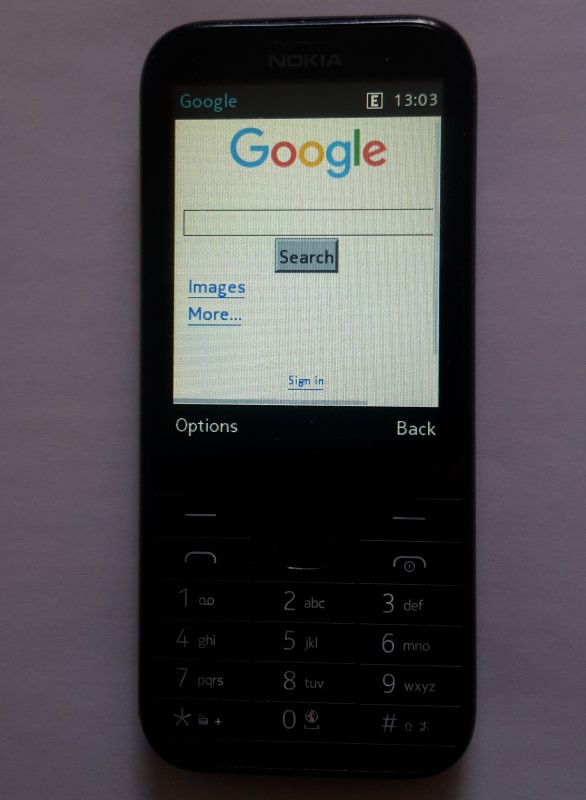
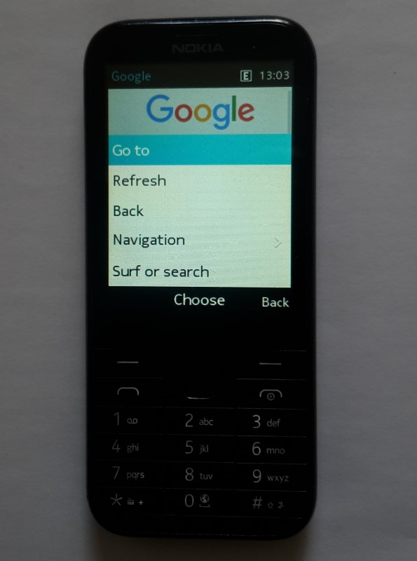

Basic launcher for native internet browser. If exist text file "Niblp.txt" on same directory as app file "Niblp.vxp", text from "Niblp.txt" will be used as autostart url (if changing app name change default text file name). On Nokia 225 singlesim rename Niblp.vxp to 271543384.vxp. On Nokia 225 dualsim rename Niblp.vxp to 271727568.vxp. Renamed program file move to "System memory\MRE\" or "Storage card\MRE\" rename your another program file to 271123656.vxp and copy to "System memory\MRE\" or "Storage card\MRE\". Now system menu "Opera" launch internal browser and system menu "Bing" launch your custom programm. For using with Nokia mobile phone, app must be signed with IMSI (your SIM card) code. https://vxpatch.luxferre.top. Application file - "Niblp.vxp". Alternative version with text input for inputing custom URl: Niblp1.vxp

p